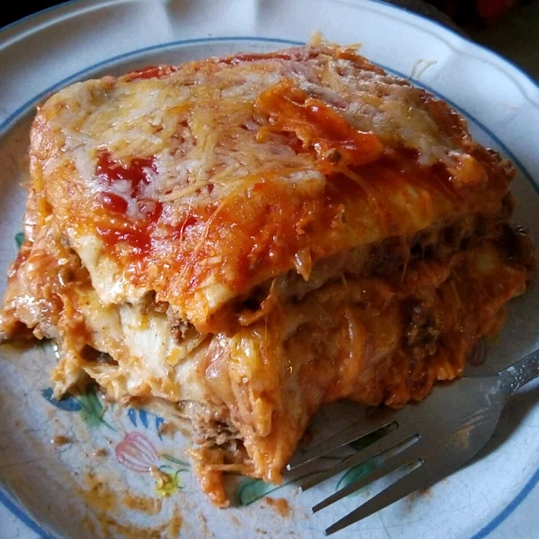

Lasagna

Description
Lasagna are a type of pasta, possibly one of the oldest types, made of very wide, flat sheets. The dish may be topped with grated cheese, which becomes melted after baking. Typically, cooked pasta is assembled with the other ingredients and then baked in an oven. The resulting casserole is cut into single-serving square portions.
This is a traditional dish in my family. Anyone can make it really. It is composed of traditional Mexican ingredients layered over the top of one another in a lasagna-like fashion (hence the name) but has little similarity to lasagna, so lasagna haters have no fear!
Ingredients
- 1 1/2 pounds ground beef
- 1/4 cup water
- 1 ounce packet taco seasoning mix
- 8 inch flour tortillas, or more if needed
- 14 ounce can refried beans
- 3 cups shredded Colby-Jack cheese
- 8 ounce jar taco sauce
- 1 cup shredded Colby-Jack cheese
- Preheat oven to 350 degrees F (175 degrees C). Grease a 9x13-inch casserole dish.
- Heat a large skillet over medium-high heat and stir in ground beef. Cook and stir until beef is crumbly, evenly browned, and no longer pink, about 10 minutes. Drain and discard any excess grease. Add water and taco seasoning; cook and stir until mixture has thickened, 5 to 10 minutes.
- Arrange 3 tortillas in the bottom of the casserole dish; spread about half the can of refried beans and half the ground beef atop the tortilla layer. Sprinkle 1 cup Colby-Jack cheese over ground beef layer. Arrange 3 more tortillas over the cheese. Spread in the remaining 1/2 can refried beans and half the jar of taco sauce; sprinkle with 1 cup Colby-Jack cheese. Arrange 3 more tortillas and top with remaining ground beef and 1 cup Colby-Jack cheese. Top with last 3 tortillas and remaining 1/2 jar taco sauce.
- Bake in the preheated oven until top tortilla layer begins to brown, 20 to 25 minutes. Sprinkle 1 cup Colby-Jack cheese over lasagna.
- Turn on oven's broiler and place lasagna under the broiler until Colby-Jack cheese is melted and bubbling, 3 to 5 minutes.